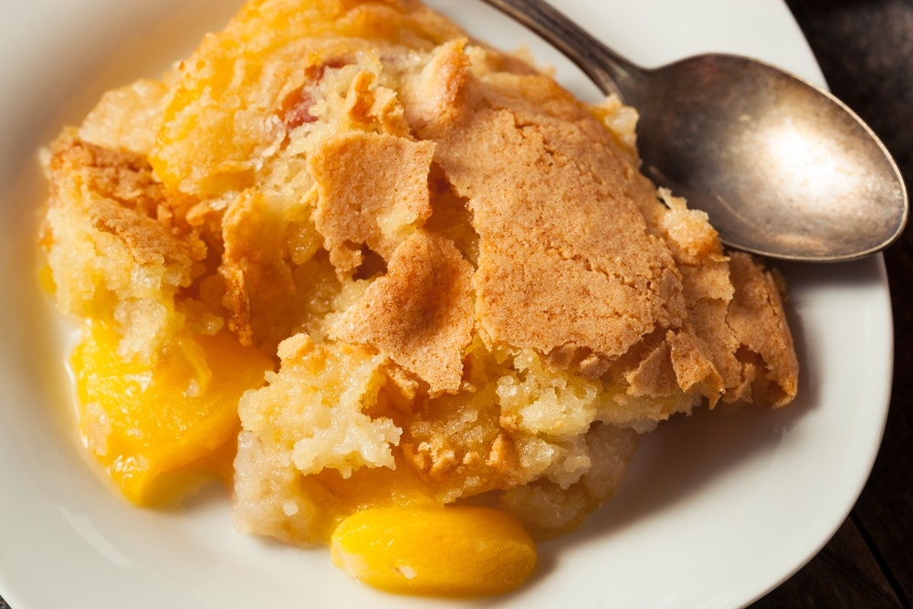

Peach Cobbler

Taste of The South
Best Pie in South
Ingredients
- 6 large peaches, cut thinly
- 1/4 cup sugar
- 1 tablespoon fresh lemon juice
- 1 teaspoon cornstarch
- 1 cup all-purpose flour
- 1/2 cup sugar
- 1 teaspoon baking powder
- 1/2 teaspoon salt
- 3/4 stick butter
- 1/4 cup boiling water
Directions
- Preheat oven to 425°F.
- Toss peaches with sugar, lemon juice, and cornstarch in a 2-qt. nonreactive baking dish and bake in middle of oven 10 minutes.
- Stir together flour, sugar, baking powder, and salt. Blend in butter with your fingertips or a pastry blender until mixture resembles coarse meal. Stir in water until just combined.
- Remove peaches from oven and drop spoonfuls of topping over them. Bake in middle of oven until topping is golden, about 25 minutes.